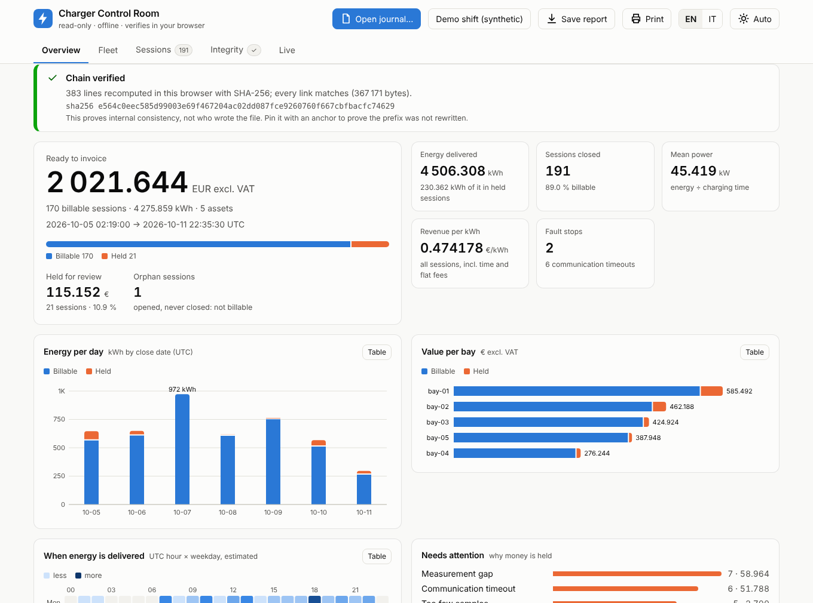

charger_monitor
An independent, cabinet-side witness for industrial DC charger bays: an arithmetically exact session ledger, a tamper-evident journal, and a read-only control room that proves it in your browser.

Nothing leaves your browserThe journal is read locally; the page makes no external request.
Independent verificationA second implementation of the journal rules, tested byte for byte against the C++ tools.
Exact money, exact energyIntegers only (µWh, µEUR); the invoice follows from the meter and the tariff of record.
Cannot touch your plantNo write path to a charger, a bus or a server. A window, not a remote control.
The demo shift is synthetic: produced by the real engine, containing no measurement. Not a legal or fiscal meter; see the compliance notes in the repository.